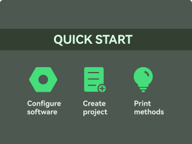
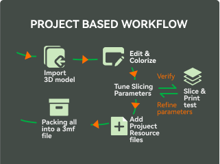
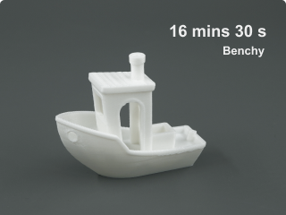
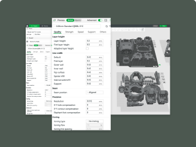
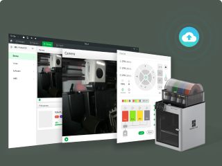
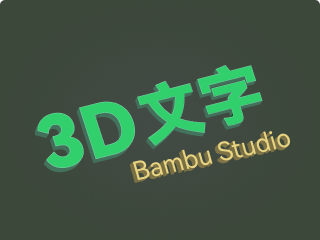

Quick Start
This article introduces the most basic usage of Bambu Studio. It guides users to configure software, create projects, and complete the first printing task step by step.

Project Based Workflow
Bambu Studio has put forward a leading workflow to truly achieve an “all in one” project. Based on the mainstream 3MF project format, it provides a series of revolutionary new features, such as Multi-Plate Support, a Project Resource Manager, and Assembly/Part View. It greatly improves the efficiency of both creators and regular users.

High Speed Print at Quality
It is challenging to print at high speed while maintaining high quality. Bambu Studio makes this happen.
"Arch Move" makes the toolhead move smoothly and reduces the machine's vibration. The smart cooling is based on fine-tuned cooling parameters for each filament type.
"Auto slow down" for overhang walls works to prevent deformation at high speeds.
Multi-Color Printing
Bambu Studio provides versatile colorizing tools to make a colorful model. You can freely add/remove filaments in a project and colorize your model with different brushes. Before printing, each filament will be auto-mapped to an AMS slot, not needing to manually change the spool placement in the AMS.

Setting Guide of Slicing Parameters
The parameter management features in Bambu Studio provide very flexible and powerful control over the slicing process. This article introduces the organization of parameters and provides some skills on taking full advantage of these capabilities.

Remote Control & Monitoring
Bambu Studio support sending print job to your printer over WAN/LAN network, controlling & monitoring every aspect of your 3D printer and printing jobs. If you have more than one printer, you can easily switch between them in the device list.
STEP Format
Compared with STL, STEP brings more effective information. Thanks to the high accuracy of STEP, a lot of extrusion paths can be generated as arcs. STEP also includes the assembly relationship of each part of a model, which can be used to restore the assembly view after a model is split.

3D Text
With 3D Text tool, users can easily create various 3D text shapes in the project, making the model more personalized. Bambu Studio provides dozens of fonts and supports bold and italic styles to give text greater flexibility.